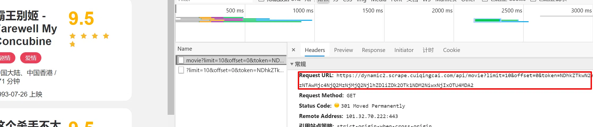
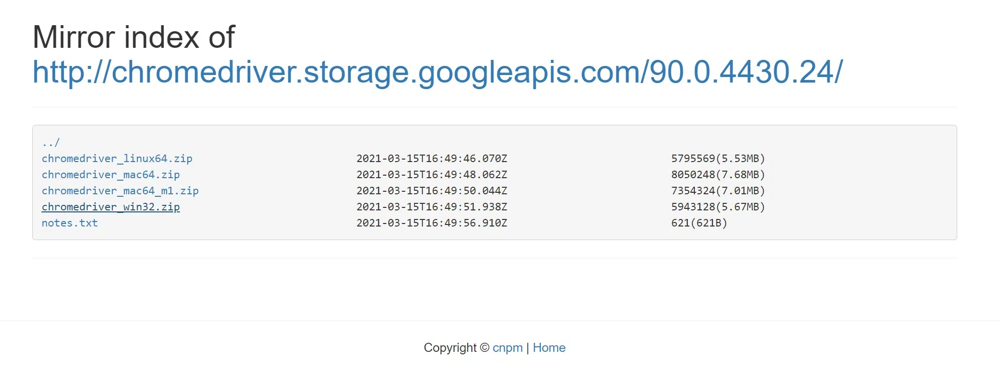
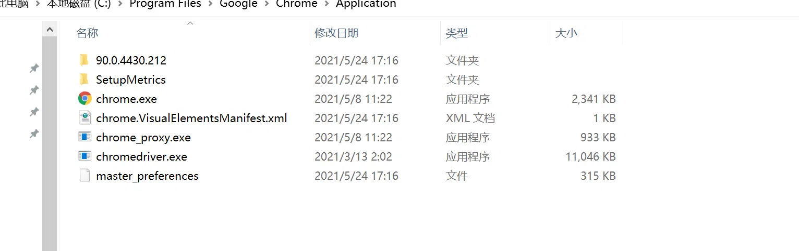
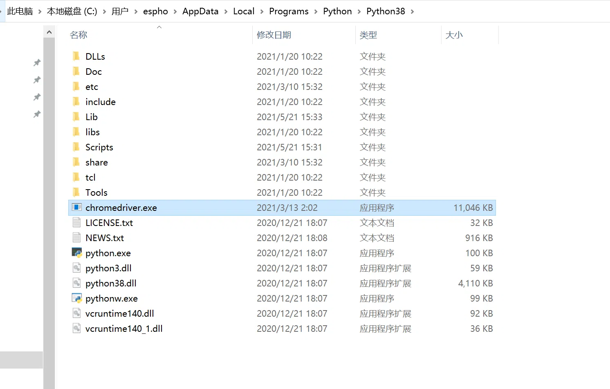
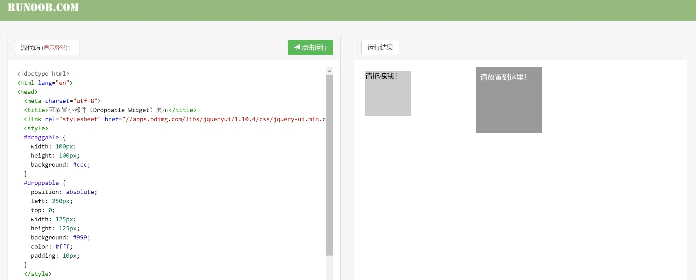
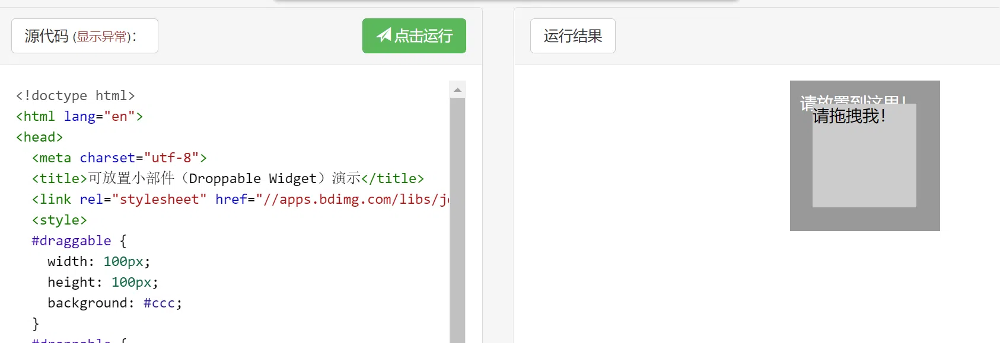

在很多情况下，Ajax请求的接口通常会包含加密的参数，如token、sign等，如：https://dynamic2.scrape.cuiqingcai.com/，它的Ajax接口是包含一个token参数的，如图所示。

由于接口的请求加上了token参数，如果不深入分析并找到token的构造逻辑，是难以直接模拟这些Ajax请求的。
Selenium是一个自动化测试工具，利用它可以驱动浏览器执行特定的动作，如点击、下拉等操作，同时还可以获取浏览器当前呈现的页面源代码，做到可见即可爬。对于一些使用JavaScript动态渲染的页面来说，此种抓取方式非常有效。
准备工作
确保已经正确安装好了Chrome浏览器并配置好了ChromeDriver。另外，还需要正确安装好Python的Selenium库。
Selenium安装
1 | pip3 install selenium |
chrome driver安装
查看安装的浏览器版本，在chrome搜索栏输入chrome://version/，会显示带当前浏览器的版本信息。

在https://npm.taobao.org/mirrors/chromedriver/下载对应版本的chrome driver，一定要对应，否则不能使用。

下载到本地后，将chromedriver.exe分别拷贝到chrome.exe和python安装路径下。


以上，安装就完成了！
基本使用
首先来看一下Selenium有一些怎样的功能。示例如下：
1 | from selenium import webdriver |
运行代码后会自动弹出一个Chrome浏览器，浏览器会跳转到百度，然后在搜索框中输入Python，接着跳转到搜索结果页，如图所示。

此时在控制台的输出结果如下：
1 | href="http://www.baidu.com/link?url=CYEq_OJxbiLcx5LothJSzfcQI9xeTzMYkPSFg2HYyceDRTQi8o6Fk8oLyRG5BTI8remsEFjvd4qN8vGLA-EBg_" target="_blank">你都用 <em>Python</em> 来做什么? - 知乎</a></h3><div class="c-row c-gap-top-small"><div class="general_image_pic c-span3" style="position:relative;top:2px;"><a class="c-img c-img3 c-img-radius-large" style="height:85px" href="http://www.baidu.com/link?url=CYEq_OJxbiLcx5LothJSzfcQI9xeTzMYkPSFg2HYyceDRTQi8o6Fk8oLyRG5BTI8remsEFjvd4qN8vGLA-EBg_" target="_blank"><img class="c-img c-img3 c-img-radius-large" src="https://dss1.bdstatic.com/6OF1bjeh1BF3odCf/it/u=958012630,1445793633&fm=218&app=92&f=JPEG?w=121&h=75&s=44A638725CB7469C82F4FFF40200D025" style="height:85px;"><span class="c-img-border c-img-radius-large"></span></a></div><div class="c-span9 c-span-last"><div class="c-abstract"><span class=" newTimeFactor_before_abs c-color-gray2 m">2019年10月17日 </span>所有项目的代码和数据在Github:interesting-<em>python</em> 如果你也想用<em>Python</em>获取数据,进行有趣的 |
源代码过长，在此省略。可以看到，当前得到的URL、Cookies和源代码都是浏览器中的真实内容。所以说，如果用Selenium来驱动浏览器加载网页的话，就可以直接拿到JavaScript渲染的结果了，不用担心使用的是什么加密系统。
了解一下Selenium的用法。
声明浏览器对象
Selenium支持非常多的浏览器，如Chrome、Firefox、Edge等，还有Android、BlackBerry等手机端的浏览器。
可以用如下方式进行初始化：
1 | from selenium import webdriver |
这样就完成了浏览器对象的初始化并将其赋值为browser对象。接下来，要做的就是调用browser对象，让其执行各个动作以模拟浏览器操作。
访问页面
可以用get方法请求页面，只需要把参数传入连接URL即可。比如，这里用get方法访问淘宝，代码如下：
1 | from selenium import webdriver |
运行后会弹出Chrome浏览器并且自动访问淘宝，然后控制台会输出淘宝页面的源代码，随后浏览器关闭。
查找节点
Selenium可以驱动浏览器完成各种操作，比如填充表单、模拟点击等。举个例子，当想要完成向某个输入框输入文字的操作时，首先需要知道这个输入框在哪，而 Selenium提供了一系列查找节点的方法，可以用这些方法来获取想要的节点，以便执行下一步动作或者提取信息。
单个节点
想要从淘宝页面中提取搜索框这个节点，首先要观察它的源代码。
可以发现，它的id是q，name也是q，此外还有许多其他属性。此时就可以用多种方式获取它了。比如，find_element_by_name代表根据name值获取，find_element_by_id则是根据id获取，另外，还有根据XPath、CSS选择器等获取的方式。
这里使用3种方式获取输入框，分别是根据id、CSS选择器和XPath获取，它们返回的结果完全一致。运行结果如下：
1 | <selenium.webdriver.remote.webelement.WebElement (session="fbca625cd8bb4eb98ae76bb68a23bd4f",element="de630823-02d3-409a-ba19-4e892a0fad15")> |
这3个节点的类型是一致的，都是WebElement。
这里列出所有获取单个节点的方法：
1 | find_element_by_id |
多个节点
多如果在网页中只查找一个目标，那么完全可以用find_element方法。但如果有多个节点需要查找，再用find_element方法，就只能得到第1个节点了。如果要查找所有满足条件的节点，需要用find_elements这样的 方法。注意，在这个方法的名称中， 注element多了一个多s，注意区分。
举个例子，假如要查找淘宝左侧导航条的所有条目，就可以这样来实现：
1 | from selenium import webdriver |
结果如下：
1 | [<selenium.webdriver.remote.webelement.WebElement (session="f9550f7bf1204e4d481803cf7a69c736", element="01e78303-6103-4f1a-96dc-0386a755a9f4")>, <selenium.webdriver.remote.webelement.WebElement (session="f9550f7bf1204e4d481803cf7a69c736", element="7a4e764e-9a05-4dad-9188-636512591835")>, <selenium.webdriver.remote.webelement.WebElement (session="f9550f7bf1204e4d481803cf7a69c736", element="16219266-ff57-4f42-95ab-4b8dbb4b811a")>, <selenium.webdriver.remote.webelement.WebElement (session="f9550f7bf1204e4d481803cf7a69c736", element="4f23598b-3ca6-4b20-9192-3e06e98984df")>, <selenium.webdriver.remote.webelement.WebElement (session="f9550f7bf1204e4d481803cf7a69c736", element="d837e630-e546-4f8b-babd-e3fdc539d2a6")>, <selenium.webdriver.remote.webelement.WebElement (session="f9550f7bf1204e4d481803cf7a69c736", element="1da195c9-d959-4d47-b729-21d8eac2756f")>, <selenium.webdriver.remote.webelement.WebElement (session="f9550f7bf1204e4d481803cf7a69c736", element="175c2217-dbe6-4d27-997f-58fbe46cbf1a")>, <selenium.webdriver.remote.webelement.WebElement (session="f9550f7bf1204e4d481803cf7a69c736", element="4747359f-d93c-4a7a-976e-501087d96e5f")>, <selenium.webdriver.remote.webelement.WebElement (session="f9550f7bf1204e4d481803cf7a69c736", element="2537bb34-3a26-4ccd-8f53-4ebbef5c70b2")>, <selenium.webdriver.remote.webelement.WebElement (session="f9550f7bf1204e4d481803cf7a69c736", element="04210bc7-ebba-44ef-8757-d88dfd0d023f")>, <selenium.webdriver.remote.webelement.WebElement (session="f9550f7bf1204e4d481803cf7a69c736", element="7bd1b6e4-31e5-4120-8017-afc59ca56f48")>, <selenium.webdriver.remote.webelement.WebElement (session="f9550f7bf1204e4d481803cf7a69c736", element="930a7b6c-26ff-468c-896e-6204b0555747")>, <selenium.webdriver.remote.webelement.WebElement (session="f9550f7bf1204e4d481803cf7a69c736", element="81305b6e-0893-46d2-b7a7-89a85c00132c")>, <selenium.webdriver.remote.webelement.WebElement (session="f9550f7bf1204e4d481803cf7a69c736", element="763237aa-5925-426d-9a76-90b3567870eb")>, <selenium.webdriver.remote.webelement.WebElement (session="f9550f7bf1204e4d481803cf7a69c736", element="60ca3595-3f74-4f1d-9224-7beb9e381a4b")>] |
得到的内容变成了列表类型，列表中的每个节点都是WebElement类型。
也就是说，如果用find_element方法，只能获取匹配的第一个节点，结果是WebElement类型。如果用find_elements方法，则结果是列表类型，列表中的每个节点是WebElement类型。
这里列出所有获取多个节点的方法：
1 | find_elements_by_id |
当然，也可以直接用find_elements方法来选择，这时可以这样写：
1 | lis = browser.find_elements(By.CSS_SELECTOR, '.service-bd li') |
结果是完全一致的。
节点交互
Selenium可以驱动浏览器来执行一些操作，或者说可以让浏览器模拟执行一些动作。比较常见的用法有：输入文字时用send_keys方法，清空文字时用clear方法，点击按钮时用click方法。示例如下：
1 | import time |
这里首先驱动浏览器打开淘宝，用find_element_by_id方法获取输入框，然后用send_keys方法输入iPhone文字，等待一秒后用clear方法清空输入框，接着再次调用send_keys方法输入iPad文字，之后再用find_element_by_class_name方法获取搜索按钮，最后调用click方法完成搜索动作。
动作链
在上面的实例中，一些交互动作都是针对某个节点执行的。比如，对于输入框，调用它的输入文字和清空文字方法；对于按钮，调用它的点击方法。其实，还有另外一些操作，它们没有特定的执行对象，比如鼠标拖拽、键盘按键等，这些动作用另一种方式来执行，那就是动作链。
比如，现在要实现一个节点的拖拽操作，将某个节点从一处拖拽到另外一处，可以这样实现：
1 | from selenium import webdriver |
打开网页中的一个拖拽实例，依次选中要拖拽的节点和拖拽到的目标节点，接着声明ActionChains对象并将其赋值为actions变量，然后通过调用actions变量的drag_and_drop方法，再调用perform方法执行动作，此时就完成了拖拽操作，如图所示：

拖拽前页面：

执行执JavaScript
SeleniumAPI并没有提供实现某些操作的方法，比如，下拉进度条。但它可以直接模拟运行JavaScript，此时使用execute_script方法即可实现，代码如下：
1 | from selenium import webdriver |
这里利用execute_script方法将进度条下拉到最底部，然后弹出alert提示框。
有了这个方法，基本上API没有提供的所有功能都可以用执行JavaScript的方式来实现了。
获取节点信息
Selenium已经提供了选择节点的方法，并且返回的是WebElement类型，那么它也有相关的方法和属性来直接提取节点信息，如属性、文本等。这样的话，就可以不用通过解析源代码来提取信息了，非常方便。
获取属性
可以使用get_attribute方法来获取节点的属性，但是前提是得先选中这个节点，示例如下：
1 | from selenium import webdriver |
运行之后，程序便会驱动浏览器打开该页面，然后获取class为logo-image的节点，最后打印出它的src属性。
返回结果：
1 | <selenium.webdriver.remote.webelement.WebElement (session="c90d6158ff9e3e6ba88d5f9b9358a358", element="c99170cd-b0c1-44b6-a0a0-f4ccf1105e91")> |
通过get_attribute方法，只需要传入想要获取的属性名，就可以得到它的值了。
获取文本值
每个WebElement节点都有text属性，直接调用这个属性就可以得到节点内部的文本信息，这相当于pyquery的text方法，示例如下：
1 | from selenium import webdriver |
结果如下：
1 | <selenium.webdriver.remote.webelement.WebElement (session="79f97c0aa935723e276438a5fff2610c", element="b86ec344-cb00-4538-b9e9-8959a076bc75")> |
获取获ID、位置、标签名、大小
WebElement节点还有一些其他属性，比如id属性可以获取节点id，location属性可以获取该节点在页面中的相对位置，tag_name属性可以获取标签名称，size属性可以获取节点的大小，也就是宽高，这些 属性有时候还是很有用的。示例如下：
1 | from selenium import webdriver |
这里首先获得class为logo-title这个节点，然后调用其id、location、tag_name、size属性来获取对应的属性值。
切换Frame
网页中有一种节点叫作iframe，也就是子Frame，相当于页面的子页面，它的结构和外部网页的结构完全一致。Selenium打开页面后，默认是在父级Frame里面操作，而此时如果页面中还有子Frame，Selenium是不能获取到子Frame里面的节点的。这时就需要使用switch_to.frame方法来切换Frame。示例如下：
1 | from selenium import webdriver |
控制台输出：
1 | No logo found |
首先通过switch_to.frame方法切换到子Frame里面，然后尝试获取子Frame里的logo节点（这是不能找到的），如果找不到的话，就会抛出NoSuchElementException异常，异常被捕捉之后，就会输出No logo found。接下来，我们需要重新切换回父级Frame，然后再次重新获取节点，发现此时可以成功获取了。
所以，当页面中包含子Frame时，如果想获取子Frame中的节点，需要先调用switch_to.frame方法切换到对应的Frame，然后再进行操作。
延时等待
在Selenium中，get方法会在网页框架加载结束后结束执行，此时如果获取page_source，可能并不是浏览器完全加载完成的页面，如果某些页面有额外的Ajax请求，在网页源代码中也不一定能成功获取 \到。所以，这里需要延时等待一定时间，确保节点已经加载出来。
这里等待的方式有两种：一种是隐式等待，一种是显式等待。
隐式等待
当使用隐式等待执行测试的时候，如果Selenium没有在DOM中找到节点，将继续等待，超出设定时间后，则抛出找不到节点的异常。换句话说，隐式等待可以在我们查找节点而节点并没有立即出现的时候， 等待一段时间再查找DOM，默认的时间是0。示例如下：
1 | from selenium import webdriver |